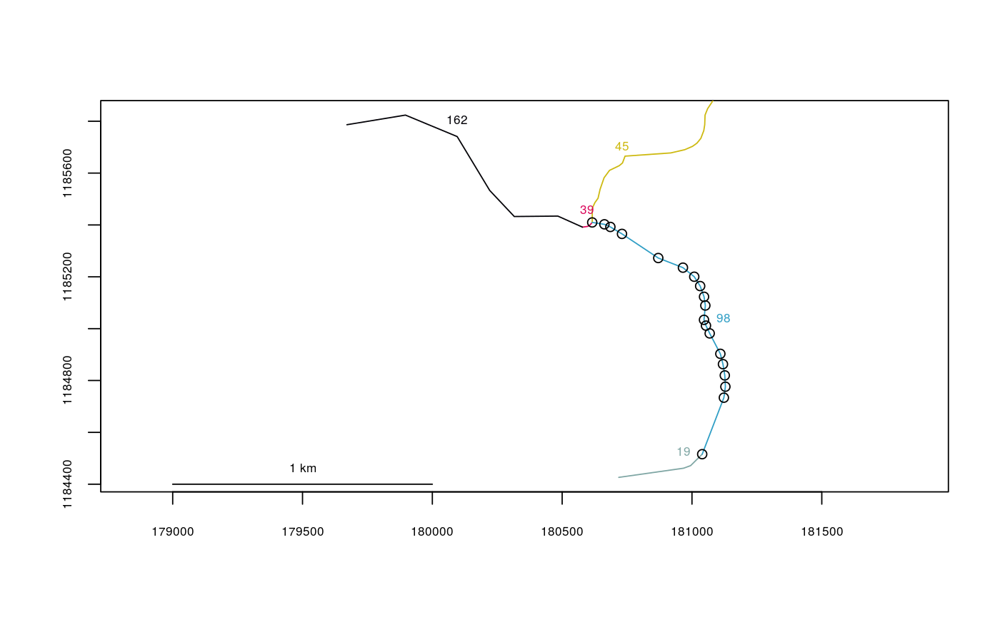

Convert XY Coordinates to River Locations
This function determines the closest vertex in the river network to each point of XY data and returns a list of river locations, defined as segment numbers and vertex numbers.
xy2segvert(x, y, rivers)
Arguments
| x | A vector of x-coordinates to transform |
|---|---|
| y | A vector of y-coordinates to transform |
| rivers | The river network object to use |
Value
A data frame of river locations, with segment numbers in $seg, vertex numbers in $vert, and the snapping distance for each point in $snapdist.
Note
Conversion to river locations is only valid if the input XY coordinates and river network are in the same projected coordinate system. Point data in geographic coordinates can be projected using project in package 'rgdal', and an example is shown below.
Examples
data(Gulk,fakefish) head(fakefish)#> x y seg vert fish.id flight flight.date #> 1 885976.9 6951164 1 595 8 1 2015-04-01 #> 2 891727.6 6943194 1 399 10 1 2015-04-01 #> 3 893895.8 6940549 1 352 14 1 2015-04-01 #> 4 893894.9 6929195 1 116 7 1 2015-04-01 #> 5 878936.0 6959825 1 806 11 1 2015-04-01 #> 6 889340.7 6948910 1 505 9 1 2015-04-01fakefish.riv <- xy2segvert(x=fakefish$x, y=fakefish$y, rivers=Gulk) head(fakefish.riv)#> seg vert snapdist #> 1 1 595 329.34419 #> 2 1 399 40.27721 #> 3 1 352 402.52259 #> 4 1 116 525.06623 #> 5 1 806 355.32753 #> 6 1 505 11.34949plot(x=Gulk, xlim=c(862000,882000), ylim=c(6978000,6993000))points(fakefish$x, fakefish$y, pch=16, col=2)## converting a matrix of points stored in long-lat to Alaska Albers Equal Area: data(line98, Kenai1) head(line98) # note that coordinates are stored in long-lat, NOT lat-long#> [,1] [,2] #> [1,] -150.6810 60.60532 #> [2,] -150.6793 60.60723 #> [3,] -150.6792 60.60760 #> [4,] -150.6792 60.60799 #> [5,] -150.6793 60.60838 #> [6,] -150.6794 60.60874library(rgdal)#>#> #> #> #> #> #> #>line98albers <- project(line98,proj="+proj=aea +lat_1=55 +lat_2=65 +lat_0=50 +lon_0=-154 +x_0=0 +y_0=0 +datum=NAD83 +units=m +no_defs +ellps=GRS80 +towgs84=0,0,0") head(line98albers)#> [,1] [,2] #> [1,] 181039.4 1184516 #> [2,] 181122.8 1184734 #> [3,] 181128.7 1184776 #> [4,] 181126.4 1184820 #> [5,] 181119.3 1184863 #> [6,] 181109.3 1184903points(line98albers)